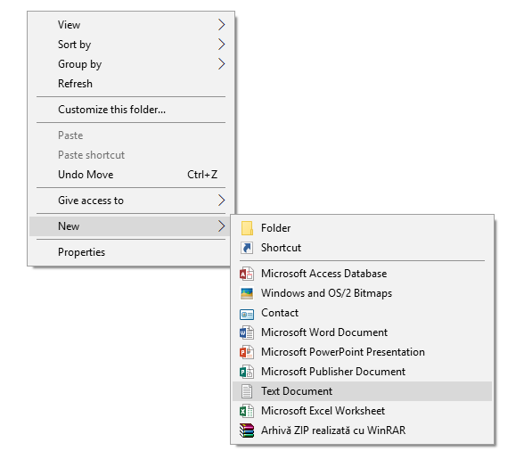
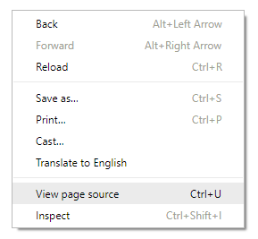

Ce este programarea web?
-Este un tip de programare ,cu ajutorul căreia se pot face pagini web.
De ce programe am nevoie?
-Este de ajuns un editor text precum Notepad.
Ce limbaje sunt utilizate?
-Se folosesc limbaje de marcare:HTML,XML,XHTML sau limbaje precum JS,CSS .
Ce pot face cu acestea?
-Iți poți crea propriile pagini web,bloguri,poți deveni web designer și să ai o cariera stralucita in domeniu.
Să începem
Pentru început va voi arata cum creați pagina.
Clic dreapta → New →Text Document
După ce denumești documentul schimbă-i extensia din .txt în .htm sau .html
Deschide fișierul cu un editor text!
Eu recomand Notepad++.Aici este un link de unde puteti descărca gratuit programul. →Descarcă
Sursa paginii
Este codul sursa de care depinde pagina web.O puteți accesa cu combinația de taste CTRL+U sau clic dreapta→vezi sursa paginii.
De acolo puteți vedea structura paginii.Vă încurajez să verificați chiar sursa acestei pagini pentru a vedea cum a fost creată.
